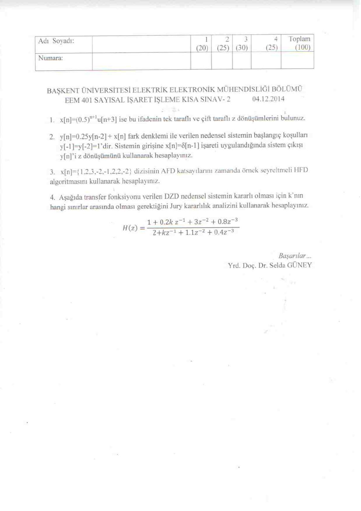
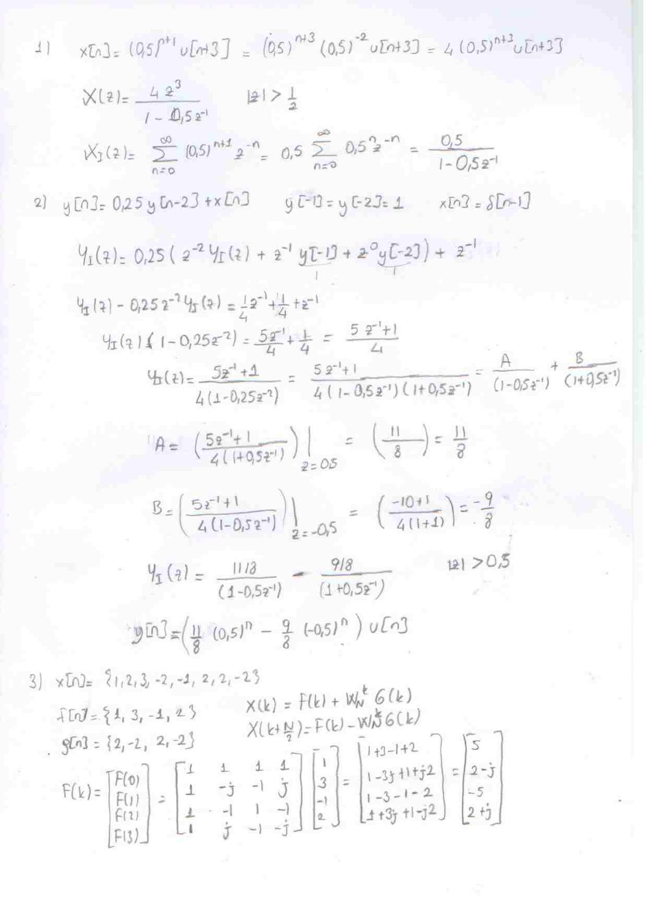
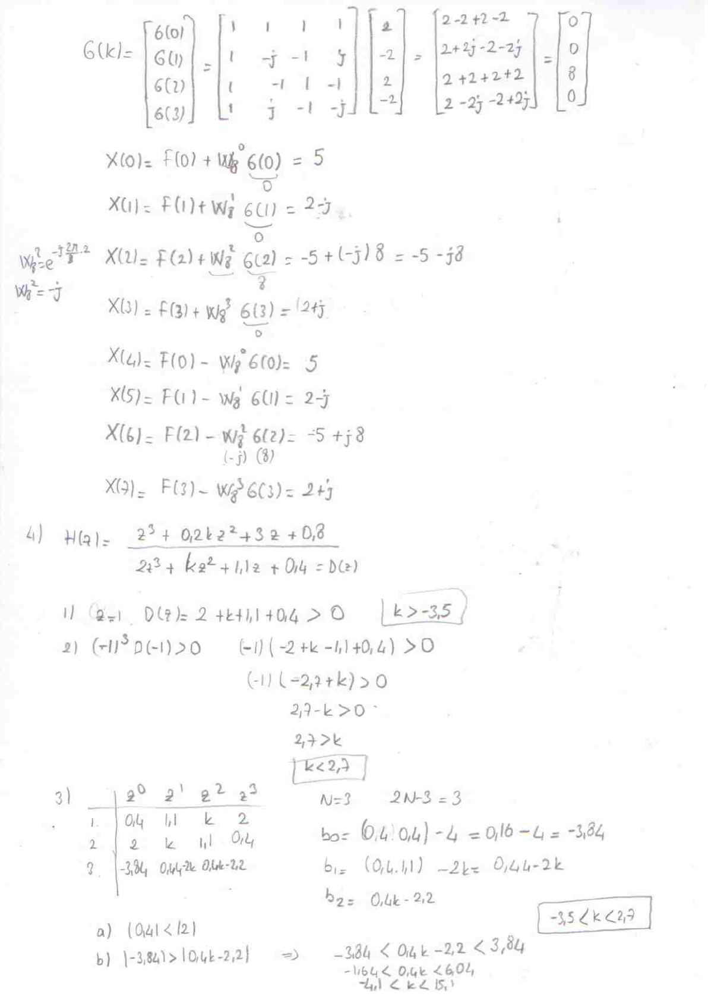

· EEM401
EEM401 Sayısal İşaret İşleme: Kısa Sınav 2 (04.12.2014) Soruları ve Çözümleri (z Dönüşümü, HFD, Jury Kararlılığı)
EEM401 – Sayısal Sinyal İşleme · 04.12.2014 · 14.11.2026
EEM401 Sayısal İşaret İşleme dersinin Kısa Sınav 2'si (04.12.2014, Başkent Üniversitesi Elektrik-Elektronik Mühendisliği, Yrd. Doç. Dr. Selda Güney) ve el yazısı çözümüm. Ad ve numara alanları boştur. Taranmış PDF yazının sonunda indirilebilir.
Sorular
- x[n] = (0,5)^(n+1)·u[n+3] ise bu ifadenin tek taraflı ve çift taraflı z dönüşümlerini bulunuz. (20 puan)
- y[n] = 0,25·y[n−2] + x[n] fark denklemi ile verilen nedensel sistemin başlangıç koşulları y[−1] = y[−2] = 1'dir. Sistemin girişine x[n] = δ[n−1] işareti uygulandığında sistem çıkışı y[n]'i z dönüşümünü kullanarak hesaplayınız. (25 puan)
- x[n] = {1, 2, 3, −2, −1, 2, 2, −2} dizisinin AFD katsayılarını zamanda örnek seyreltmeli HFD algoritmasını kullanarak hesaplayınız. (30 puan)
- Aşağıda transfer fonksiyonu verilen DZD nedensel sistemin kararlı olması için k'nın hangi sınırlar arasında olması gerektiğini Jury kararlılık analizini kullanarak hesaplayınız. (25 puan)
H(z) = (1 + 0,2k·z⁻¹ + 3z⁻² + 0,8z⁻³) / (2 + k·z⁻¹ + 1,1z⁻² + 0,4z⁻³)
Çözüm
1. x[n] = (0,5)^(n+3)·(0,5)^(−2)·u[n+3] = 4·(0,5)^(n+3)·u[n+3]. Çift taraflı: X(z) = 4z³ / (1 − 0,5z⁻¹), |z| > 1/2. Tek taraflı (n ≥ 0): X_I(z) = Σ_{n=0}^{∞} (0,5)^(n+1) z⁻ⁿ = 0,5 / (1 − 0,5z⁻¹).
2. Tek taraflı z dönüşümü ve başlangıç koşulları ile: Y_I(z) = 0,25·(z⁻²Y_I(z) + z⁻¹y[−1] + y[−2]) + z⁻¹, yani Y_I(z)(1 − 0,25z⁻²) = (5z⁻¹ + 1)/4. Y_I(z) = (5z⁻¹ + 1) / [4(1 − 0,5z⁻¹)(1 + 0,5z⁻¹)] = A/(1 − 0,5z⁻¹) + B/(1 + 0,5z⁻¹), A = 11/8, B = −9/8. Buradan (|z| > 0,5):
y[n] = [(11/8)(0,5)ⁿ − (9/8)(−0,5)ⁿ]·u[n]
Kontrol: y[0] = 11/8 − 9/8 = 0,25; fark denkleminden y[0] = 0,25·y[−2] + x[0] = 0,25 + 0 = 0,25 ✓.
3. N = 8 için x[n] çift ve tek indisli iki 4 noktalı diziye ayrılır: f[n] = {1, 3, −1, 2} (çift indisler) ve g[n] = {2, −2, 2, −2} (tek indisler). X(k) = F(k) + W₈ᵏ·G(k), X(k + 4) = F(k) − W₈ᵏ·G(k), k = 0, 1, 2, 3. 4×4 DFT matrisiyle: F(k) = {5, 2 − j, −5, 2 + j}, G(k) = {0, 0, 8, 0}. W₈² = −j olduğundan X(0) = 5, X(1) = 2 − j, X(2) = −5 − j8, X(3) = 2 + j, X(4) = 5, X(5) = 2 − j, X(6) = −5 + j8, X(7) = 2 + j.
4. Karakteristik polinom D(z) = 2z³ + k·z² + 1,1z + 0,4. Jury koşulları:
- D(1) = 2 + k + 1,1 + 0,4 > 0 ⇒ k > −3,5.
- (−1)³·D(−1) > 0: D(−1) = −2 + k − 1,1 + 0,4 = k − 2,7 ⇒ k < 2,7.
- Jury tablosu (N = 3): satır 1: 0,4, 1,1, k, 2; satır 2 (ters): 2, k, 1,1, 0,4; satır 3: b0 = 0,4·0,4 − 2·2 = −3,84; b1 = 0,4·1,1 − 2k = 0,44 − 2k; b2 = 0,4k − 2,2. Koşullar: |0,4| < |2| ve |b0| > |b2| ⇒ −4,1 < k < 15,1.
Üçü birlikte: −3,5 < k < 2,7.


